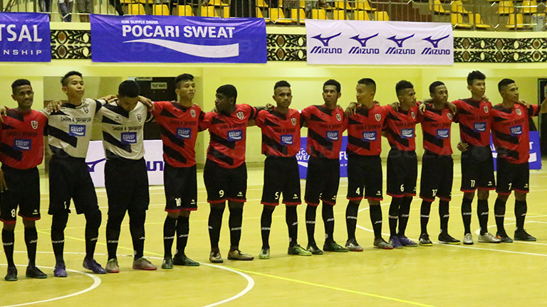

Futsal

Tim Futsal yang telah berdiri sejak tahun 2010 ini sering memiliki nama tim Penta FC. Penta FC dilatih oleh Willy yang mana menangani tim ini sejak tim ini dibentuk. Penta FC sudah memiliki beberapa prestasi dan pernah mewakili Lampung diajang Pocari Sweat Futsal Championship ditingkat nasional. Berikut beberapa prestasi yang pernah diraih :
Juara 1 Pocari Sweat Futsal Championship 2014 Lampung
Perempat FInal Pocari Sweat Futsal Championship 2014
Juara 3 Hydro Coco Futsal Competition 2016